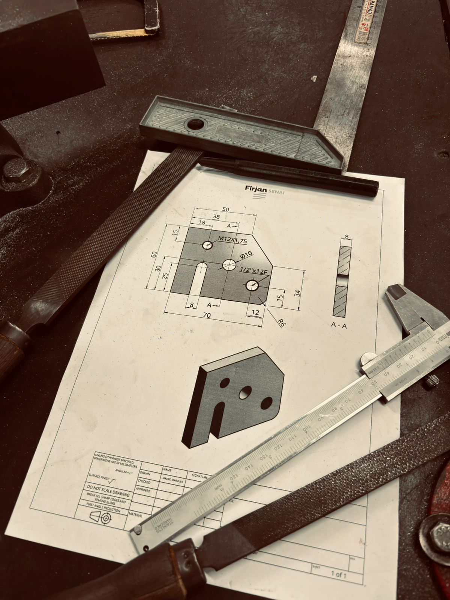
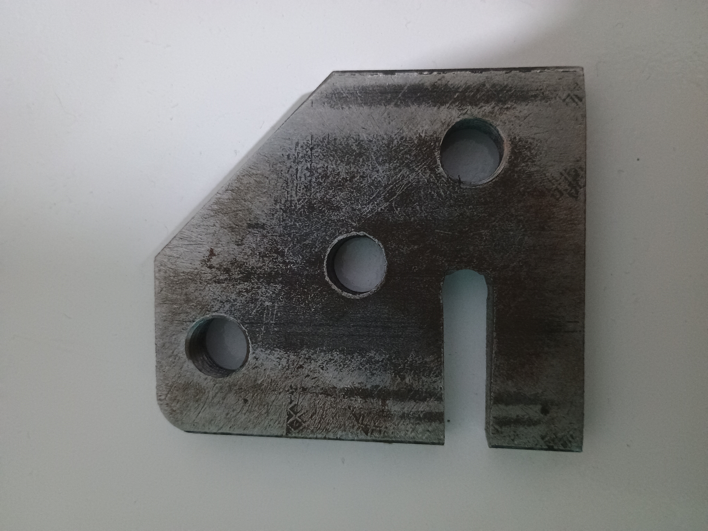

Cuidado com o dedo! Siga o roteiro ou chore no almoxarifado.
Siga a ordem cronológica para não estragar a peça. Marque o que já foi feito!
Se você seguiu o roteiro e não chorou no almoxarifado, sua peça deve estar parecida com esta!

Peça: Barra Chata | Bruto: 75mm | Final: 60mm X 70mm
Toque nos pontos azuis para ver os detalhes da fabricação:

Selecione uma parte da peça para detalhes.